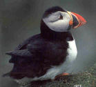
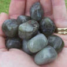

Facts of Newfoundland and Labrador
Facts of Newfoundland and Labrador
Quaerite Prime Regnum Dei (Seek ye first the kingdom of God)


Geographical Information
The province consists of two sections, the island of Newfoundland, and the mainland portion of Labrador. The most easterly Canadian province, the island is situated at the mouth of the Gulf of St. Lawrence. The province lies between the 46th and 61st parallels.
Exploration History
The first European contact with North America was that of the medieval Norse settlers arriving via Greenland. For several years after AD 1000 they lived in a village on the tip of the Great Northern Peninsula, known today as L'Anse aux Meadows. Remnants and artifacts of the occupation can still be seen at L'Anse aux Meadows, now a UNESCO World Heritage Site. The island was inhabited by the Beothuk (known as skrælingjar in Greenlandic Norse) and later by Mi'kmaq.
From the late 15th Century, European explorers like John Cabot, João Fernandes Lavrador, Gaspar Corte-Real, Jacques Cartier and others began exploration.
John Cabot (1450-1499), commissioned by King Henry VII of England, landed on the North East coast of North America in 1497. The exact location of his landing is unknown but the 500th anniversary of his landing was commemorated in Bonavista. The 1497 voyage has generated much debate among historians, with various points in Newfoundland, and Cape Breton Island in Nova Scotia, most often identified as the likely landing place.
Other Information
- Population: 521,542 (2019)
- Languages Spoken (2016): English - 98.5%; French - 0.4%; Others - 1.1%
- Confederation with Canada: March 31, 1949
- Capital City: St. John's
- Average Temperatures: Winter: 0°C to -15°C; Summer: 15°C to 25°C
Provincial Flower: Pitcher Plant (Sarracenia Purpurea)

Although it was not declared the provincial flower of Newfoundland and Labrador until 1954, this strange plant appeared on the Newfoundland penny during the late 1880s. The pitcher plant is found primarily in bogs and marshland throughout the province. It has a large wine-red flower and hollow pitcher-shaped leaves are attached to the base of the stem. An insectivorous plant, it feeds off insects that become trapped inside when the leaves fill with water.
Provincial Tree: Black Spruce (Picea Mariana)

Designated as the provincial tree in November 1993, it is also known as the bog spruce. Although dark bluish-green in color, it is called the "black" spruce to distinguish it from other types of spruce trees. An evergreen coniferous tree, it is tolerant of nutrient-deficient soils, growing primarily in areas that have poor drainage. The black spruce is the most abundant tree in Labrador and appears on the Labrador flag.
Provincial Bird: Atlantic Puffin (Fratercula Arctica)
The puffin has officially been the provincial bird of Newfoundland and Labrador since 1991. It is a member of the auk family. The puffin is also called the sea parrot because of its multi-colored beak. Marine birds that inhabit cliffs, puffins can dive 50 meters underwater in search of food. Their diet consists mostly of small fish such as caplin and herring. Their wingspan is approximately 55 cm., and they can fly up to 80 km. per hour. They live approximately 25 years, usually mate for life, and produce one egg per year. Witless Bay, Newfoundland, is home to the largest puffin colony in North America.
Provincial Mineral: Labradorite
A mineral discovered in northern Labrador, it was first described by Moravian missionaries in the late 18th century and brought to Europe. It is prized for its beautiful shifting iridescent colors of blue, green, grey and bronze. Found largely in the Nain area of Labrador, it is being mined at Ten Mile Bay by the Labrador Inuit Association. Labradorite is commonly used in ornamentation for buildings and in making jewelry.
Provincial Tartan

The provincial tartan was developed in 1955 by Sam Wilansky, a clothing store owner in St. John's. The tartan is predominantly green with gold, white, brown and red bands of color. He chose most of the colors to correspond with The Ode to Newfoundland.
Interesting Facts
- Newfoundland has its own time zone - God spent half an hour more creating Newfoundland.
- Marconi received the first transatlantic wireless message on Signal Hill on December 12, 1901.
- The accents between Waterford, Ireland and St. John's, NL are nearly identical.
- You can travel to France without leaving the province. Sort of.
- Oldest city in North America. Used to be home to world's busiest airport.
- Argentia, Newfoundland averages 206 days of fog per year.
- Vikings settled in L'Anse aux Meadows over 1,000 years ago.